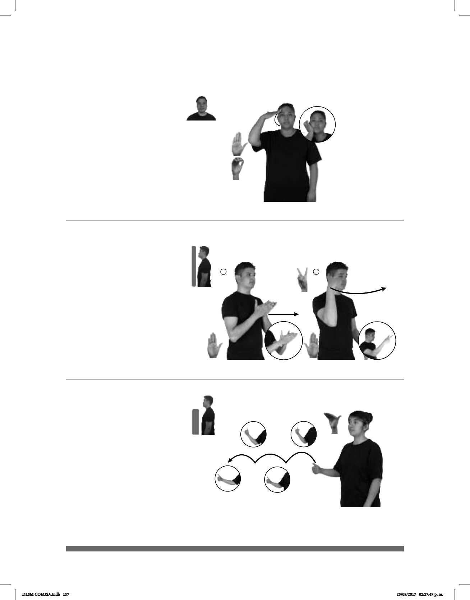

157
1
(B-P 139)
2
(B-P 140)
CANCÚN
allá
HABER CRUCERO
allá
En Cancún hay un crucero.
Seña: SM
Seña que pasa de
B.P.2 a C.8
La palma inicia hacia
abajo y termina hacia la izquierda.
De la sien a la barbilla.
Los dedos de MD
tocan la frente y después la parte
inferior de la palma toca la barbilla.
1. (1451-1506)
Navegante de origen
genovés que trazó y dio a conocer la
primera ruta de ida y vuelta de
Europa a América. 2. Ciudad del
estado de Chiapas perteneciente a
los Estados Unidos Mexicanos.
HACE-PASADO CRISTÓBAL-COLÓN DESCUBRIR AMÉRICA
Cristóbal Colón descubrió América hace años.
Seña: SC: I. SS; II. SM
I. B-P.2; II. 2.2
I. Palmas oblicuas
hacia arriba y hacia el centro; II.
Palma hacia la izquierda.
I. A la altura del pecho;
II. A la altura de la sien.
I. y II. Recto hacia
enfrente.
sust. m. Viaje por
mar, de recreo, en el que se visitan
varios puertos de una región. Barco
en el que se efectúa ese viaje.
Cuadra (B-P 141)
__muy
TIENDA
allá
CERCA HABER DOS CUADRAS
La tienda más cercana está a dos cuadras.
Seña: SM
B-P.7
Palma hacia la
izquierda.
A la altura del pecho.
La mano simula
varios saltos hacia el frente.
sust. f. Cada una de las
calles que forman los lados de una
manzana.
DLSM COMISA.indb 157 25/09/2017 02:27:47 p. m.